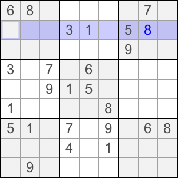
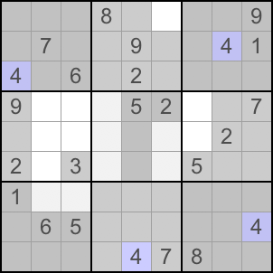

| Back to Course Catalog |
|
Hidden Single |
|
In a House (Row, Column, or Block), if there is only one possible position for a candidate, we call it hidden single. Let's look at the example:  In Block 1, Column 2 and 3, and Row 3 cannot be 9. Thus, the only possible position for 9 is R2C1. An easier way to spot hidden single is to tap on a clue. Sudobility iPhone software will automatically gray out all the cells which are not possible for the candidate.  In this example, by tapping clue 4, Sudobility shows the only possible location for 4 in Block 2 is R1C6. |
| Back to Course Catalog |